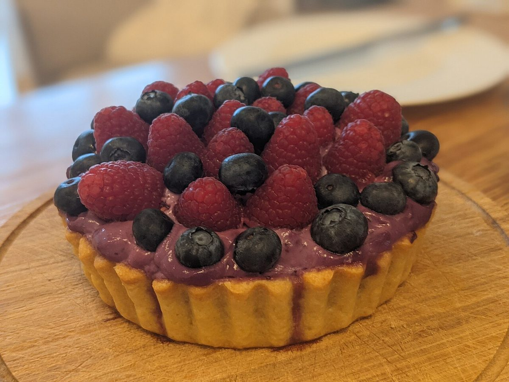
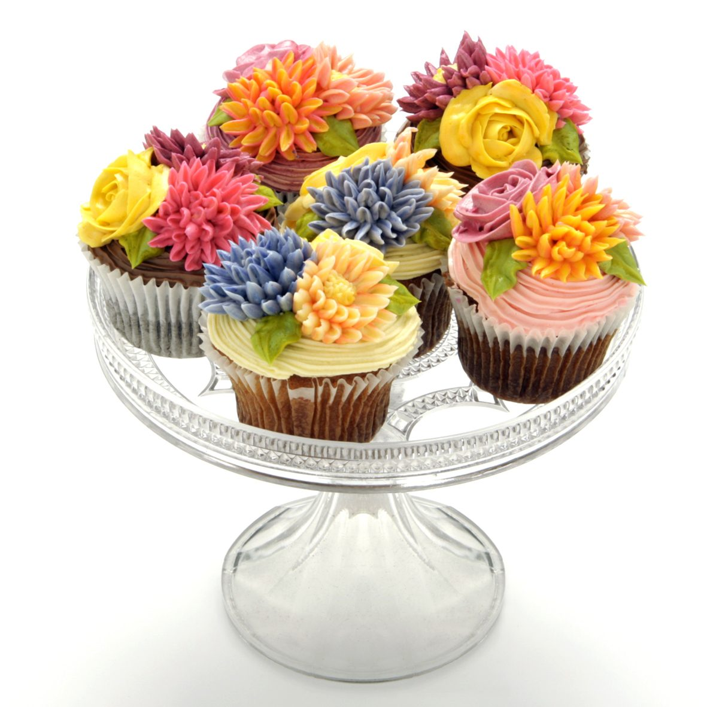
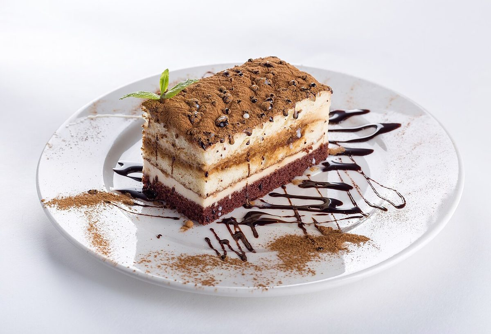
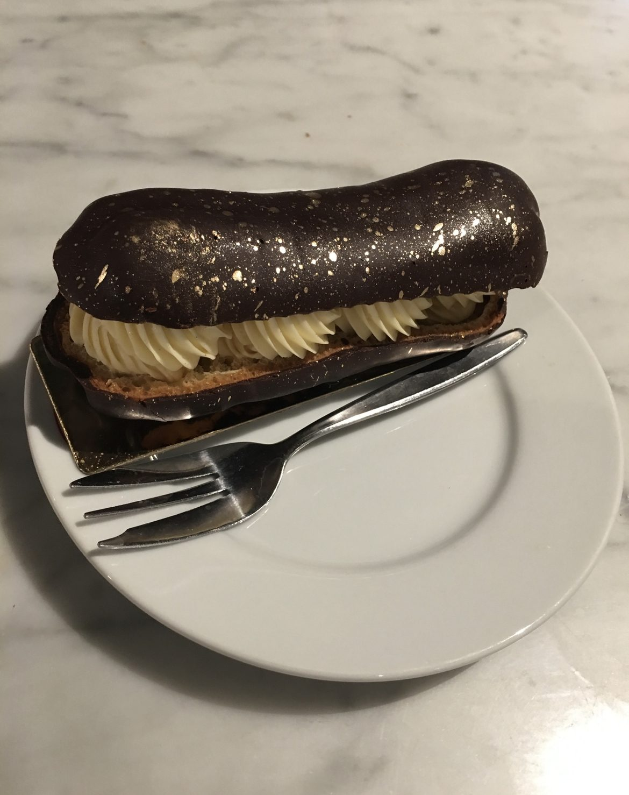
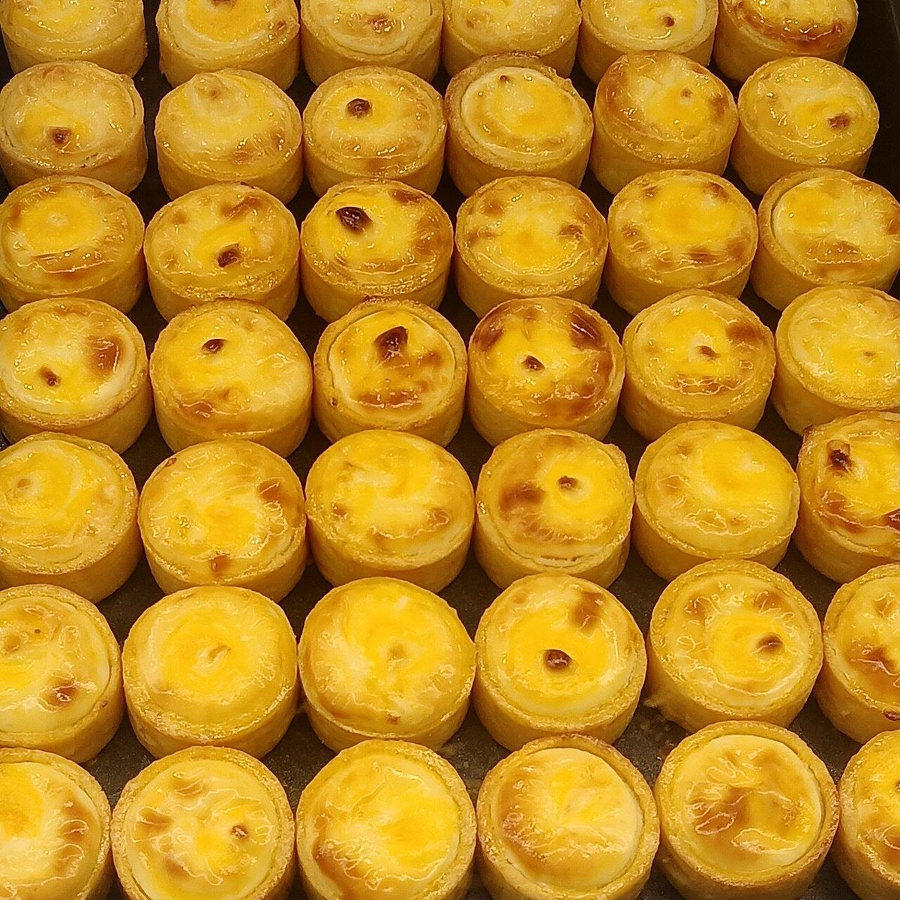

ABOUT
お店のこと
ル リュバンは、岡山県玉野市八浜町にあるケーキ店です。八浜駅から歩いて数分、駅前の道を西へ少し進んだところにあります。
店内は小さく、テイクアウト中心。ご入店は1組ずつと紹介されています。ショーケースのケーキはお取り置きを相談できる場合もあるそうです。
店主のブログには「自信を持ってできることをきちんとお届けしたい」という言葉があり、用意できるケーキの中からお選びいただく方針が書かれています。
店名の「リュバン(ruban)」はフランス語でリボンの意味です。お店が名前に込めた想いは確認できていないため、「ひとつずつ丁寧に結んでお届けする」というコンセプトは制作側のイメージです。
- 所在地岡山県玉野市八浜町大崎472-8
- 最寄り八浜駅から徒歩数分
- スタイルテイクアウト中心・1組ずつのご入店
- ご予約ホールケーキは台数限定。公式Instagramでの確認が案内されています
- 営業時間・定休日準備中
GALLERY
ケーキと焼き菓子(イメージ)











SWEETS
お菓子
紹介されている主な商品です。種類は時期により変わり、売り切れることもあります。写真はイメージです。
フルーツタルト
サクサクのタルト生地とフルーツの組み合わせが人気と紹介されています。 価格: 準備中
ミニタルト
お土産向けとして紹介されています。 価格: 準備中
カットケーキ
時期によって種類が変わります。 価格: 準備中
ホールケーキ
誕生日や母の日・父の日、クリスマスなどに台数限定。 価格: 準備中
VOICE
口コミ
イメージ例
小さなお店でしたが、ケーキが宝石みたいに並んでいて、迷うのも楽しい時間でした。
イメージ例
手みやげにタルトを買いました。見た目がかわいくて、渡したときに喜んでもらえました。
イメージ例
誕生日のケーキをお願いしました。早めに確認しておいてよかったです。
口コミは制作側が作ったイメージ例で、実在のお客様の声ではありません。